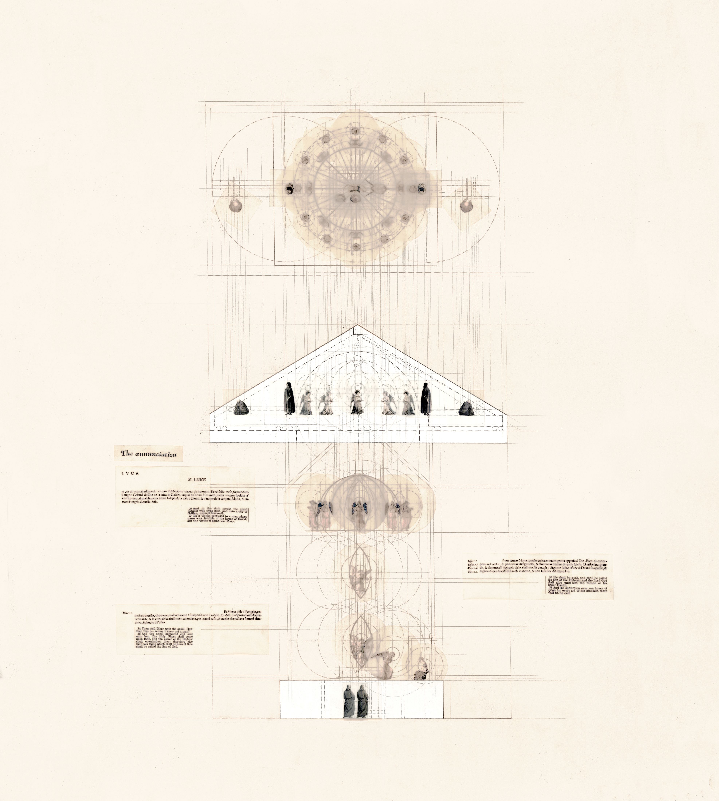
Study drawing of Filippo Brunelleschi's ingegni del paradiso (the heaven machinery) designed for a 1430s production of The Annunciation in Florence.
Medium: graphite and semi-translucent paper prints on Strathmore, figures hand-drawn in plan and borrowed from Renaissance paintings in elevation
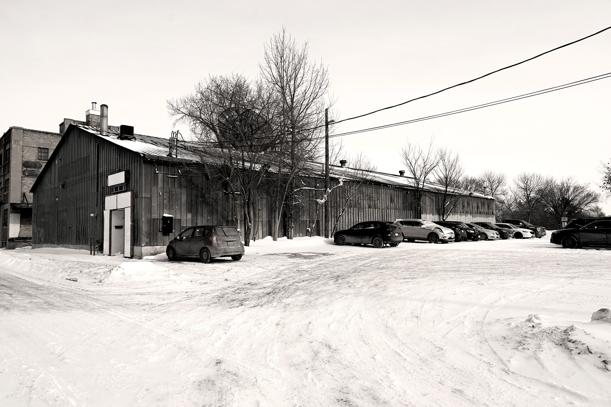
Design Proposal
Teatro delle Macchine is a community performance hall on Duncan Street, bordering Waterfront Drive. Its design merges the Exchange District's raw industrial character with Renaissance and Elizabethan theatre mechanics: a Brunelleschi-inspired winch canopy and a Globe Theatre-style grave trap within a radial performance space topped by a bicycle wheel roof and central oculus. Mechanization extends beyond the stage in the form of a pulley-operated dumbwaiter in the café, an exposed elevator, and an in-house workshop. Three amphibious theatre carts, inspired by Medieval pageant wagons, bring theatre to the broader community.
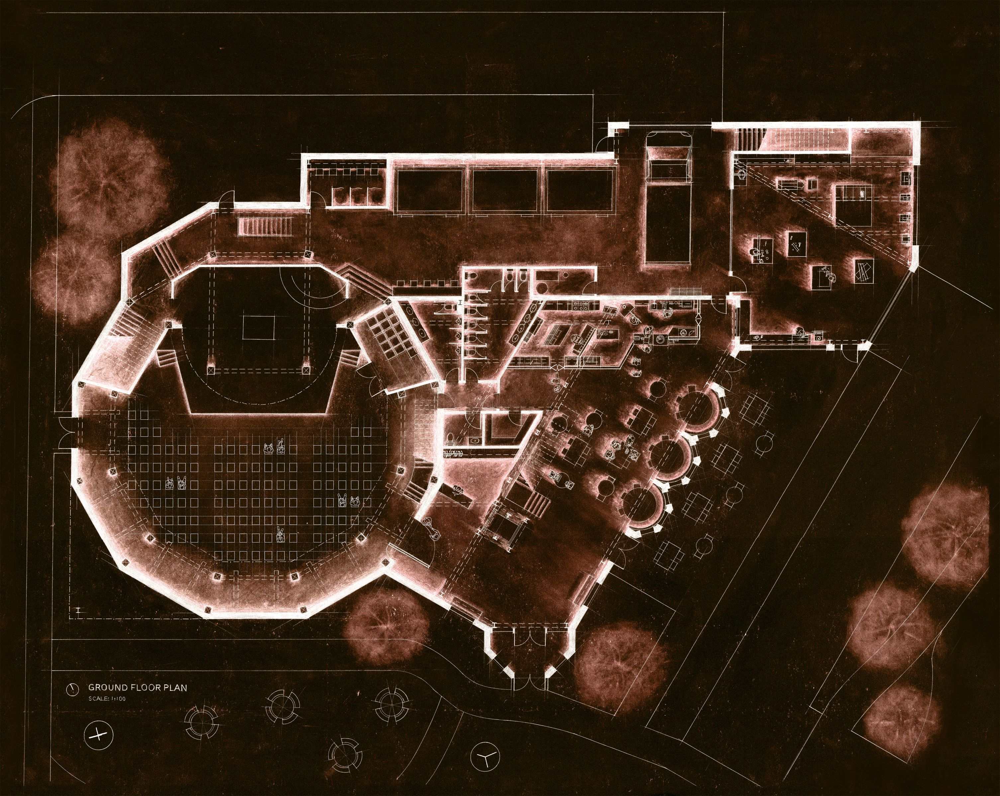
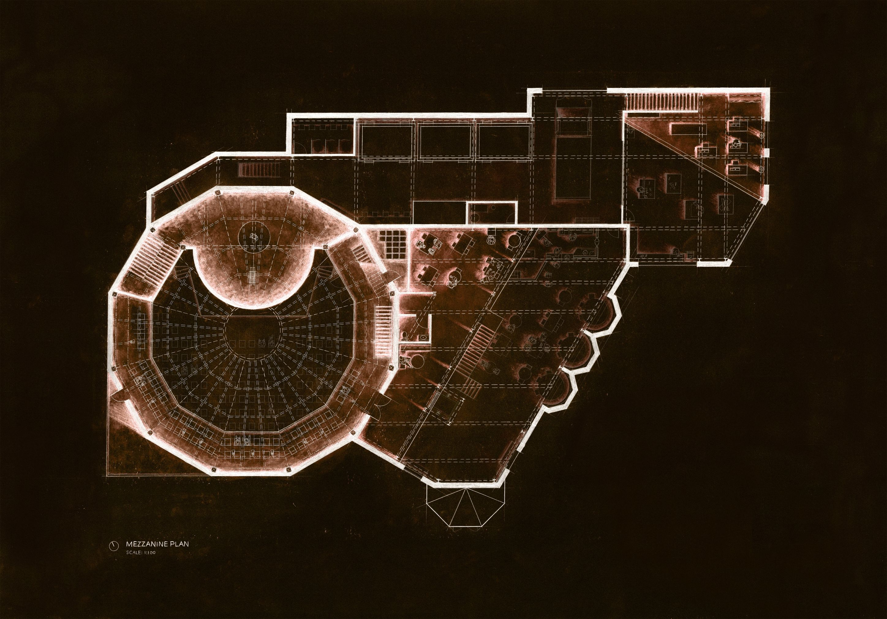
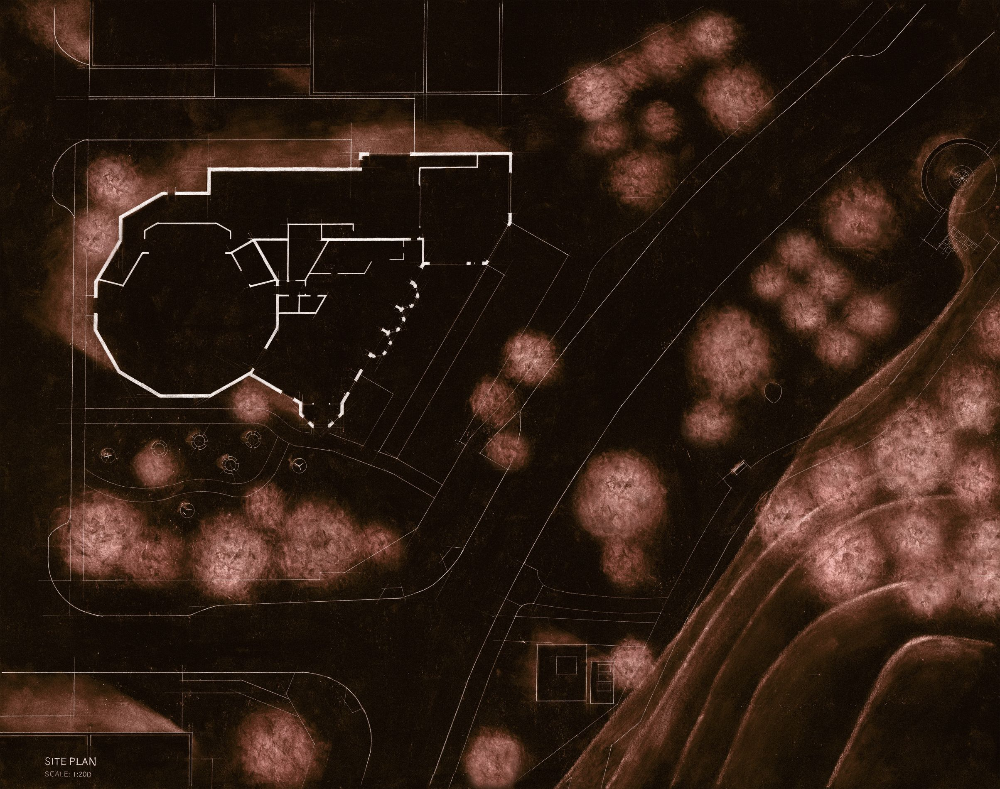

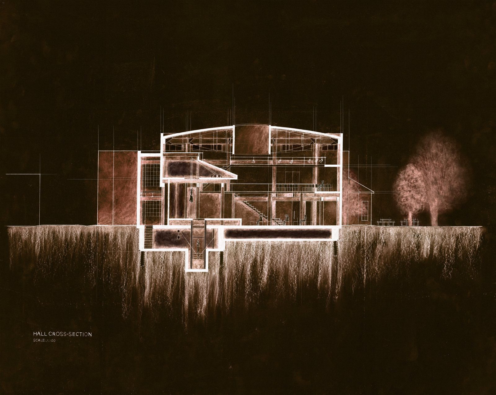
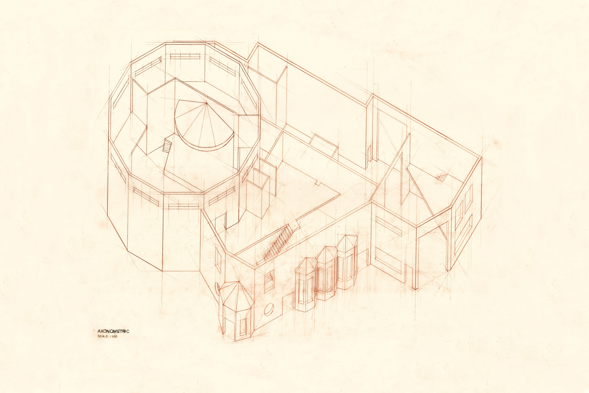
Medium: coloured pencil on mylar
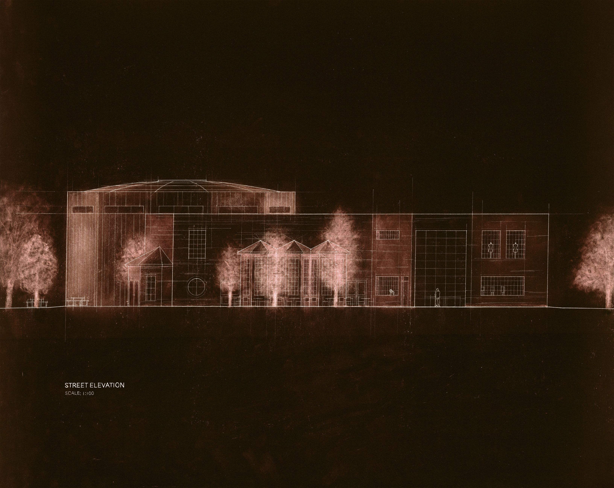
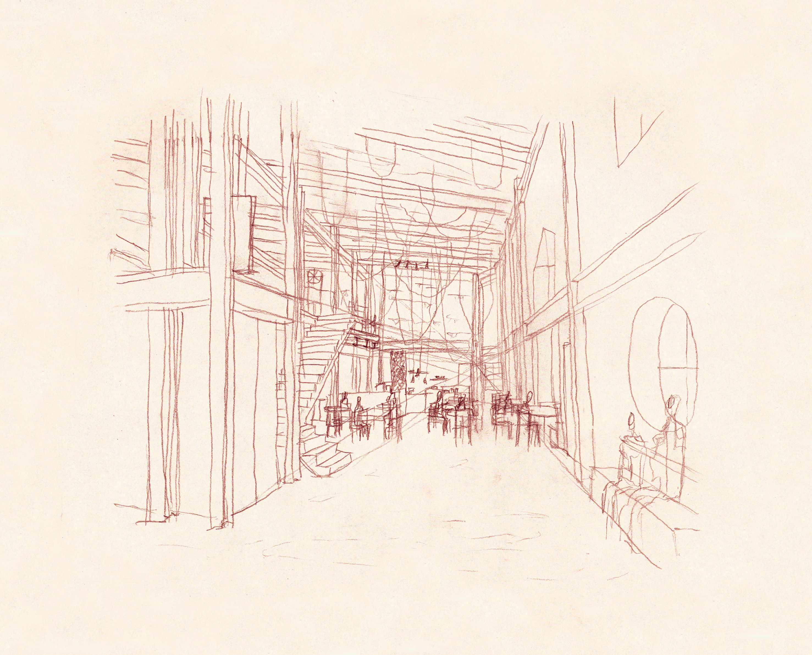
Medium: graphite on paper
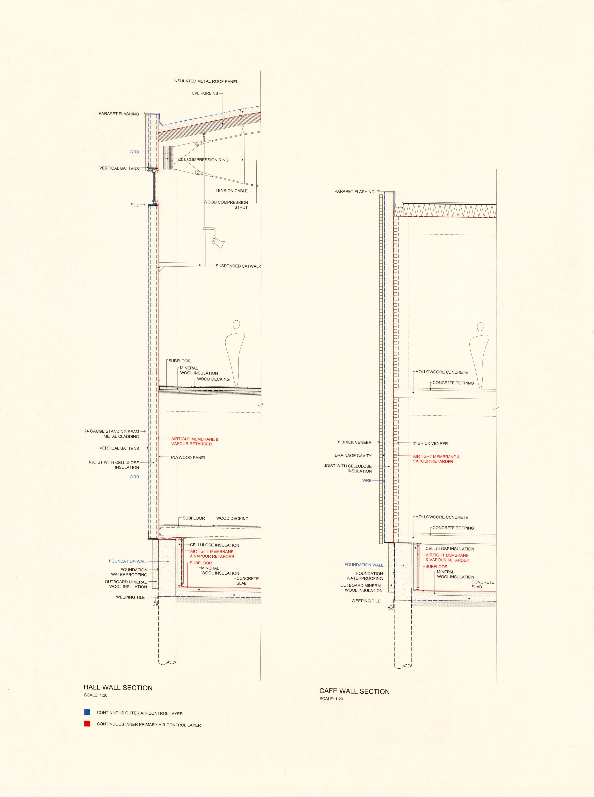
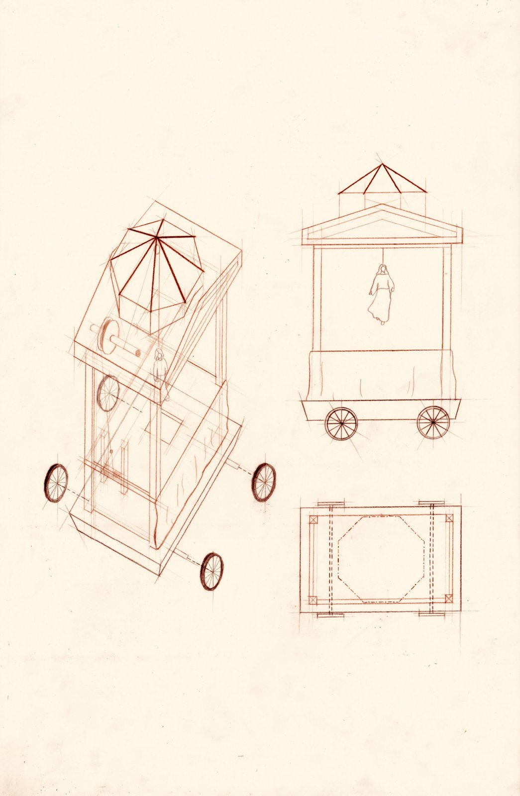
Medium: coloured pencil on Mylar
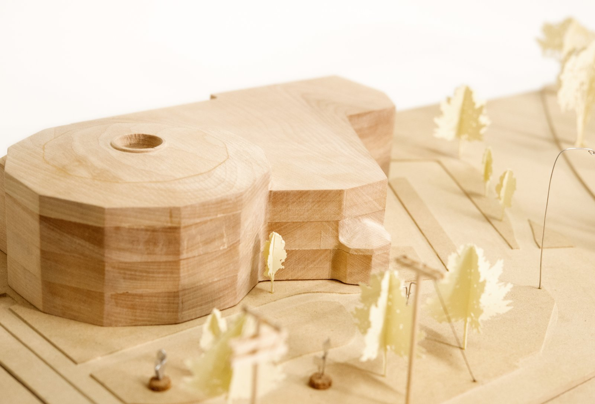
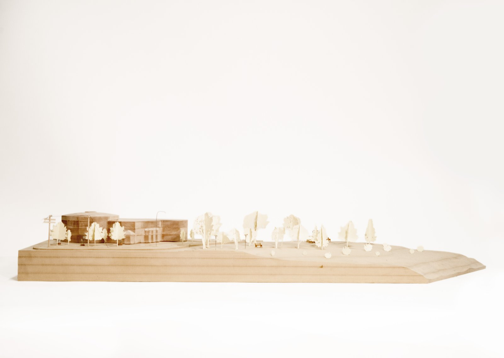